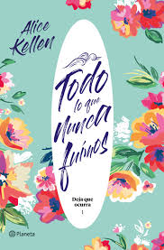

libro1 :"Kimetsu no YaibaMi " Tanjiro es el hijo mayor en una familia quin perdio a su padre.Un dia , va de visita a otro pueblos para vender carbon, y ternina quedandose a pasar la noche en la casa de un lugareño,ya que adunda el rumor de un demonio que ronda por las montañas por la noche
libro2:"El principito"Mi dibujo no representaba un sombrero. Representaba una serpiente boa que digiere un elefante. Dibujé entonces el interior de la serpiente boa a fin de que las personas mayores pudieran comprender. Siempre estas personas tienen necesidad de explicaciones.

libro3="todo lo nunca fuimos"Mi dibujo no representaba un sombrero. Representaba una serpiente boa que digiere un elefante. Dibujé entonces el interior de la serpiente boa a fin de que las personas mayores pudieran comprender. Siempre estas personas tienen necesidad de explicaciones.
